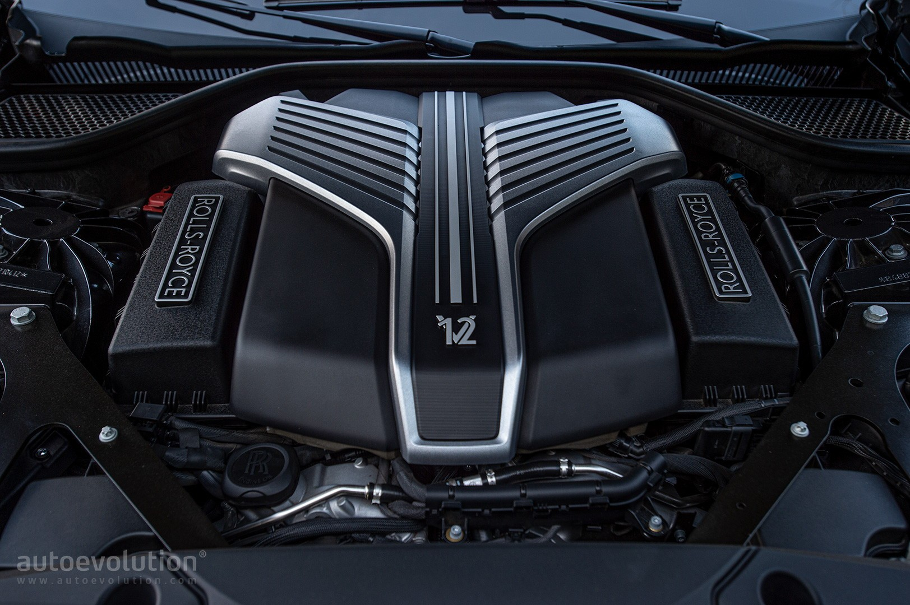
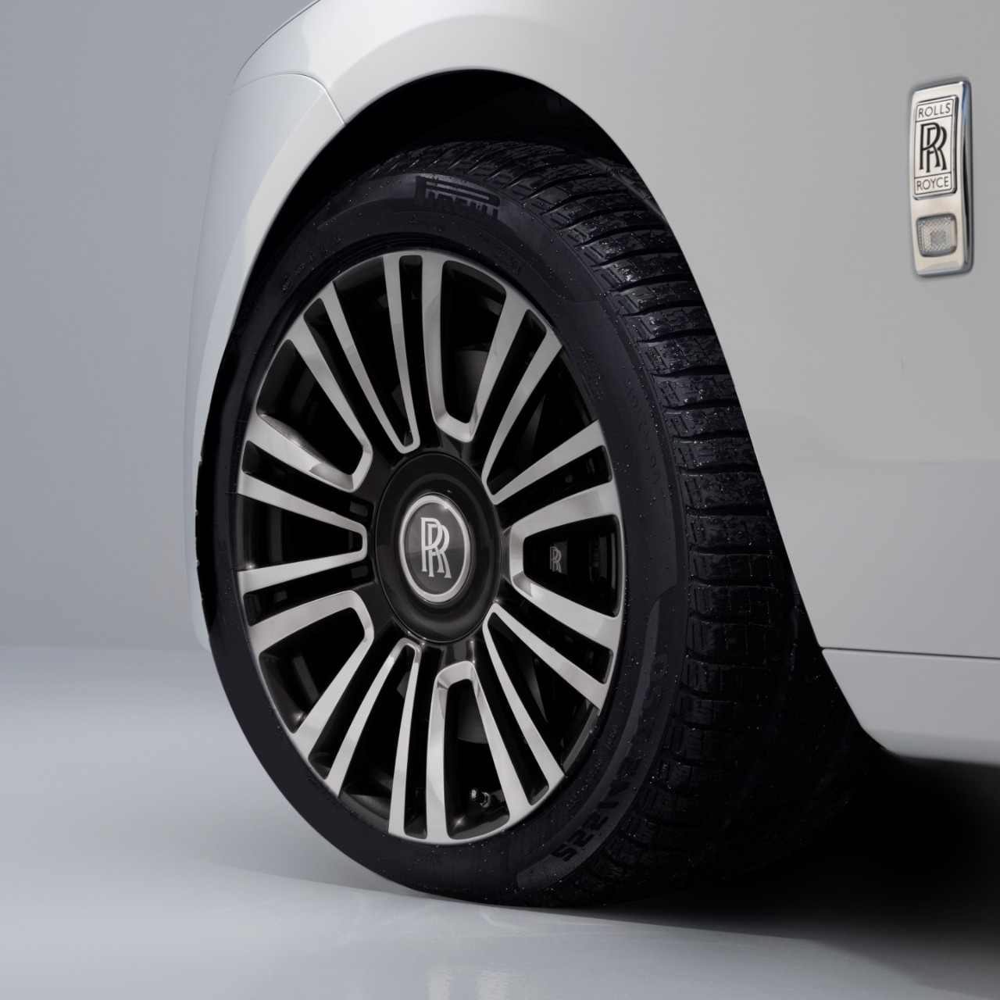
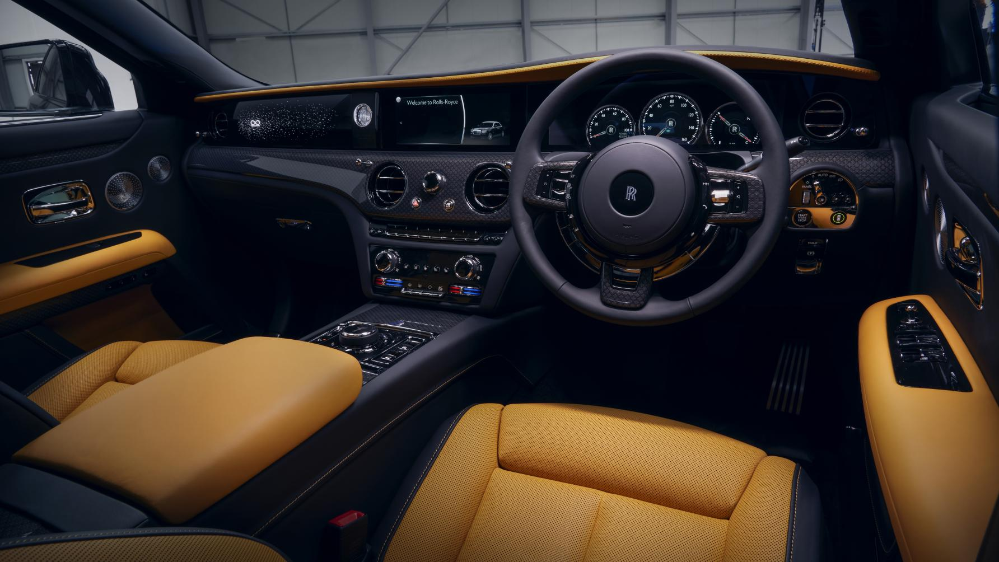

ROLLS ROYCE GHOST
ENGINE |
The Rolls-Royce Ghost is powered by a 6.75-liter twin-turbo V12 engine that delivers 563 horsepower. It provides effortless acceleration with whisper-quiet operation, ensuring a smooth and commanding ride. |
WHEEL & TIRES |
It rides on refined alloy wheels paired with custom-developed, noise-reducing tires. These are designed to absorb road imperfections and maintain a silent, smooth glide over any surface. |
STEERING
|
The Ghost features electric power-assisted steering with rear-wheel steering. This combination enhances low-speed maneuverability and provides exceptional stability and control at higher speeds. |
SEATS
|
Inside, the Ghost offers hand-stitched leather seats with heating, ventilation, and massage functions. The seats are ergonomically designed for maximum comfort, transforming every journey into a first-class experience. |
BRAKES
|
The braking system is powerful yet subtle, engineered for smooth, quiet deceleration. It ensures confident stopping power while preserving the serene cabin environment Rolls-Royce is known for. |
DRIVING TECHNOLOGY |
With cutting-edge features like the Planar Suspension System, Satellite Aided Transmission, and adaptive cruise control, the Ghost uses GPS and real-time data to prepare for the road ahead, delivering an unmatched level of ride intelligence and refinement. |